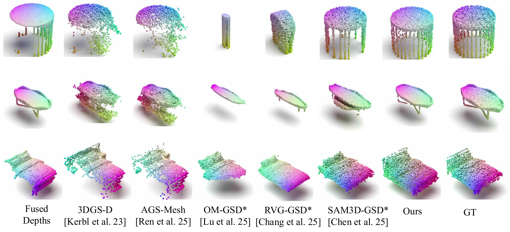
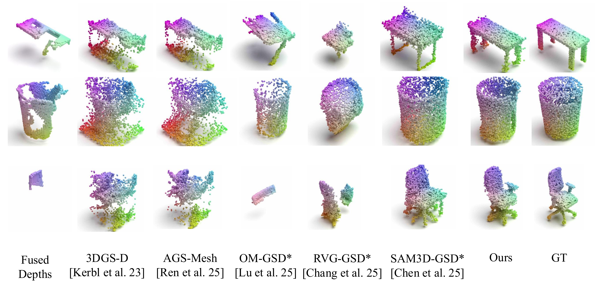
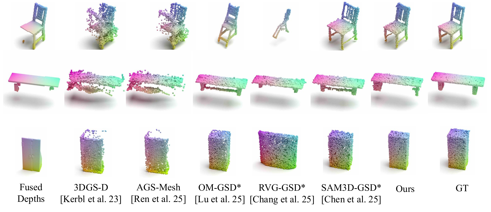
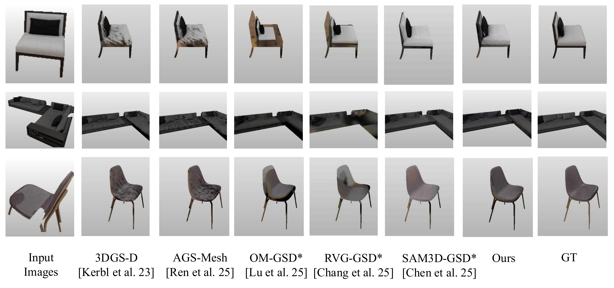
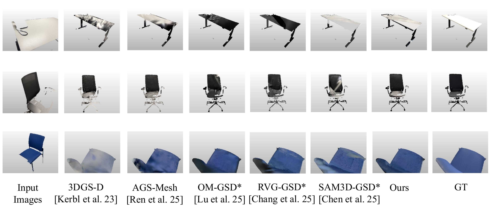
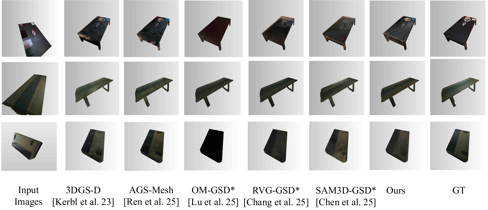

Recovering complete 3D representations of objects from few casual image captures remains a significant challenge. Recent 3D generative models, particularly those based on Flow-Matching (FM), can synthesize high-quality textured assets; however, they often suffer from ''synthetic bias'' where learned priors override observational evidence, alongside a lack of alignment with the observed instance. Conversely, optimization-based methods like 3D Gaussian Splatting (3DGS) provide high fidelity on visible surfaces but fail to reason about unobserved geometry. In this paper, we present FlowObject, a framework that reformulates sparse-view 3D reconstruction as a training-free, guided inverse problem.
Our approach applies a dual-space guidance strategy to steer the Ordinary Differential Equation (ODE) trajectory of a flow-matching model, enabling the completion of unseen regions through learned generative priors while enforcing strict consistency with real-world observations.
By integrating a 3DGS refinement stage, FlowObject further bridges the gap between ''synthetic-looking'' generative outputs and photorealistic reconstructions. Comprehensive benchmarks on synthetic and real-world datasets demonstrate that current state-of-the-art methods often struggle to achieve geometric completeness and observational consistency simultaneously, especially under severe occlusions. In contrast, FlowObject significantly outperforms state-of-the-art generative models and optimization-based frameworks in both geometric completeness and view-dependent appearance fidelity.






@article{rao2026flowobject,
title={FlowObject: Flow Steering for Bridging Generative Priors and Reconstruction Fidelity},
author={Rao, Yuchen and Ren, Xuqian and Nie, Yinyu and Sarkar, Sayan Deb and Zhang, Biao and Lepetit, Vincent and Fraundorfer, Friedrich},
journal={arXiv preprint arXiv:2606.19019},
year={2026}
}